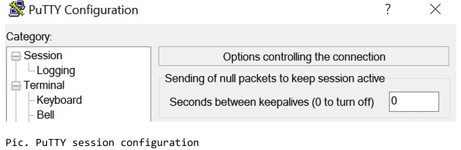
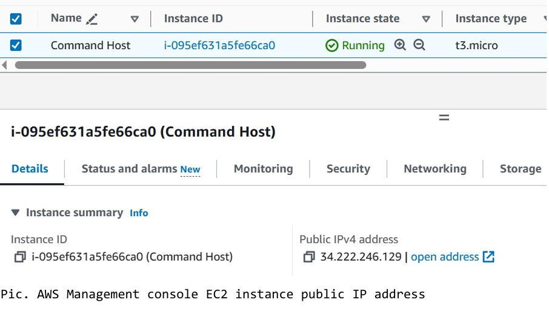
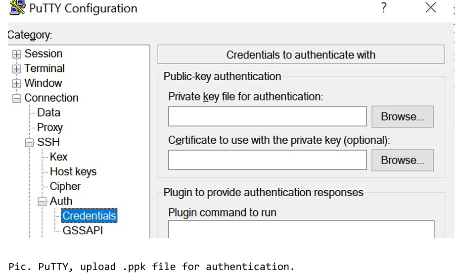
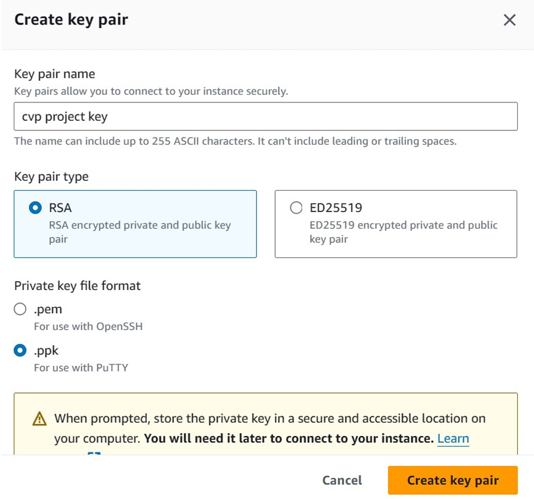
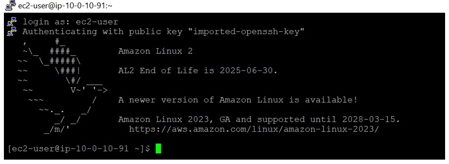
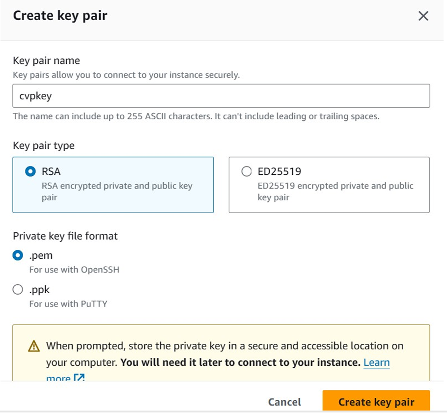
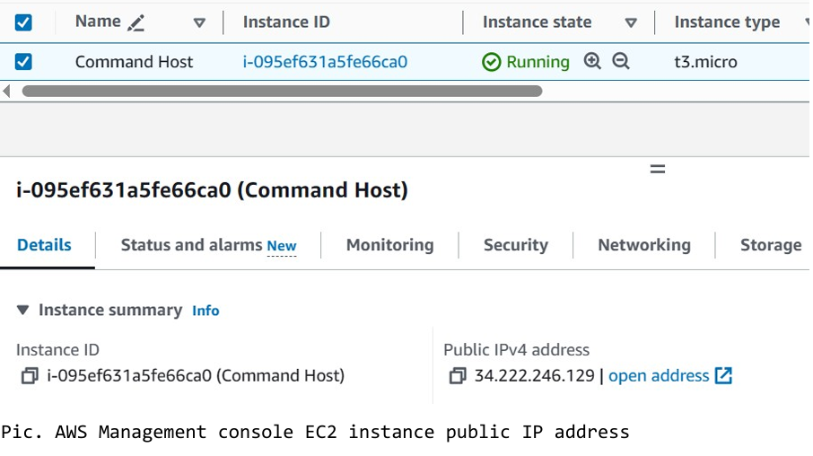

SSH to Windows machine is different to Linux and mac operating system. Please follow below steps depending on your operating system.
To connect to an Amazon Linux EC2 instance (Download PuTTY to SSH into the Amazon EC2 instance). To avoid time out, Open putty.exe and Configure PuTTY timeout to keep the PuTTY session open for a longer period of time (select connection and Set Seconds between keepalives to 30).
Paste the Public DNS or IPv4 address of the AWS Linux Ec2 instance (Public DNS or IPv4 address can be found in the details section of the EC2 instance on AWS management console e.g. 34.222.246.129).
In puTTY browse and select the AWS private key (.ppk file) that was downloaded during the launch of the AWS EC2 instance. In puTTY click on the connections, expand SSH, expand Auth, click on credentials and browse private key file for authentication to upload AWS secret keys), click open at the bottom of the puTTY window and click on open again. When prompted login as, enter: ec2-user
To SSH into AWS EC2 instance, Create a key pair when launch an EC2 instance. Below picture explains AWS Keypair creation.
Below picture shows, PuTTY successful login to AWS EC2 instance.
Select and download PEM private key file format at the time of creating AWS Linux EC2 instance.
Make a note of the Public DNS or IPv4 address of the AWS Linux Ec2 instance (Public DNS or IPv4 address can be found in the details section of the EC2 instance on AWS management console e.g. 34.222.246.129).

Open a terminal window, and change directory cd to the directory
where the cvpkey.pem file was downloaded. For example, if the
cvpkey.pem file was saved to your Downloads directory, run this
command: cd ~/Downloads
Change the permissions on the key to be read-only, by running this
command: chmod 400 cvpkey.pem
Run the this command ssh -i cvpkey.pem ec2-user@
Type yes when prompted to allow the first connection to this
remote SSH server. No password would be required because you are
using key pair authentication.